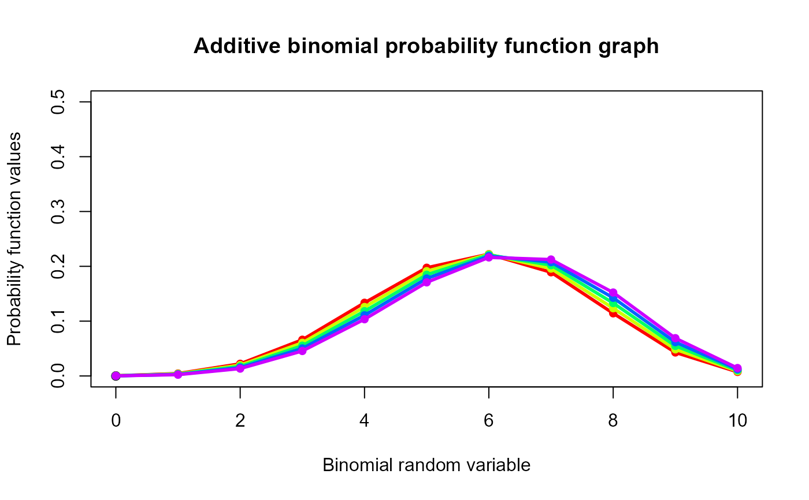
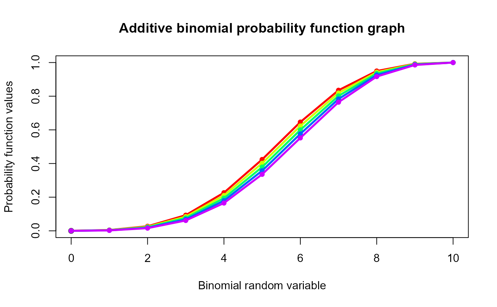

These functions provide the ability for generating probability function values and cumulative probability function values for the Additive Binomial Distribution.
Arguments
- x
vector of binomial random variables.
- n
single value for no of binomial trials.
- p
single value for probability of success
- alpha
single value for alpha parameter.
Value
The output of dAddBin gives a list format consisting
pdf probability function values in vector form.
mean mean of Additive Binomial Distribution.
var variance of Additive Binomial Distribution.
Details
The probability function and cumulative function can be constructed and are denoted below
The cumulative probability function is the summation of probability function values.
$$P_{AddBin}(x)= {n \choose x} p^x (1-p)^{n-x}(\frac{alpha}{2}(\frac{x(x-1)}{p}+\frac{(n-x)(n-x-1)}{(1-p)}-\frac{alpha(n-1)n}{2})+1)$$
The alpha is in between $$\frac{-2}{n(n-1)}min(\frac{p}{1-p},\frac{1-p}{p}) \le alpha \le (\frac{n+(2p-1)^2}{4p(1-p)})^{-1}$$
$$x = 0,1,2,3,...n$$ $$n = 1,2,3,...$$ $$0 < p < 1$$ $$-1 < alpha < 1$$
The mean and the variance are denoted as $$E_{Addbin}[x]=np$$ $$Var_{Addbin}[x]=np(1-p)(1+(n-1)alpha)$$
NOTE : If input parameters are not in given domain conditions necessary error messages will be provided to go further.
References
Johnson NL, Kemp AW, Kotz S (2005). Univariate discrete distributions, volume 444. John Wiley and Sons. Kupper LL, Haseman JK (1978). “The use of a correlated binomial model for the analysis of certain toxicological experiments.” Biometrics, 69--76. Paul SR (1985). “A three-parameter generalization of the binomial distribution.” History and Philosophy of Logic, 14(6), 1497--1506. Morel JG, Neerchal NK (2012). Overdispersion models in SAS. SAS Publishing.
Examples
#plotting the random variables and probability values
col <- rainbow(5)
a <- c(0.58,0.59,0.6,0.61,0.62)
b <- c(0.022,0.023,0.024,0.025,0.026)
plot(0,0,main="Additive binomial probability function graph",xlab="Binomial random variable",
ylab="Probability function values",xlim = c(0,10),ylim = c(0,0.5))
for (i in 1:5)
{
lines(0:10,dAddBin(0:10,10,a[i],b[i])$pdf,col = col[i],lwd=2.85)
points(0:10,dAddBin(0:10,10,a[i],b[i])$pdf,col = col[i],pch=16)
}

dAddBin(0:10,10,0.58,0.022)$pdf #extracting the probability values
#> [1] 0.0004043127 0.0044714100 0.0222003651 0.0660569110 0.1334843019
#> [6] 0.1973852760 0.2222071562 0.1891753252 0.1143076141 0.0429108652
#> [11] 0.0073964626
dAddBin(0:10,10,0.58,0.022)$mean #extracting the mean
#> [1] 5.8
dAddBin(0:10,10,0.58,0.022)$var #extracting the variance
#> [1] 2.918328
#plotting the random variables and cumulative probability values
col <- rainbow(5)
a <- c(0.58,0.59,0.6,0.61,0.62)
b <- c(0.022,0.023,0.024,0.025,0.026)
plot(0,0,main="Additive binomial probability function graph",xlab="Binomial random variable",
ylab="Probability function values",xlim = c(0,10),ylim = c(0,1))
for (i in 1:5)
{
lines(0:10,pAddBin(0:10,10,a[i],b[i]),col = col[i],lwd=2.85)
points(0:10,pAddBin(0:10,10,a[i],b[i]),col = col[i],pch=16)
}

pAddBin(0:10,10,0.58,0.022) #acquiring the cumulative probability values
#> [1] 0.0004043127 0.0048757227 0.0270760878 0.0931329988 0.2266173007
#> [6] 0.4240025767 0.6462097329 0.8353850581 0.9496926723 0.9926035374
#> [11] 1.0000000000